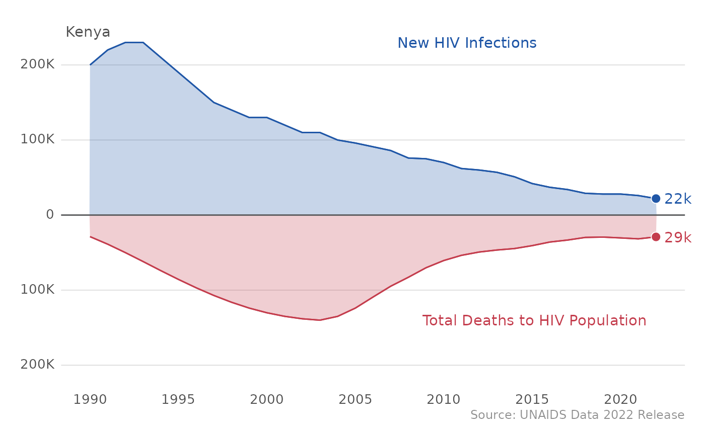
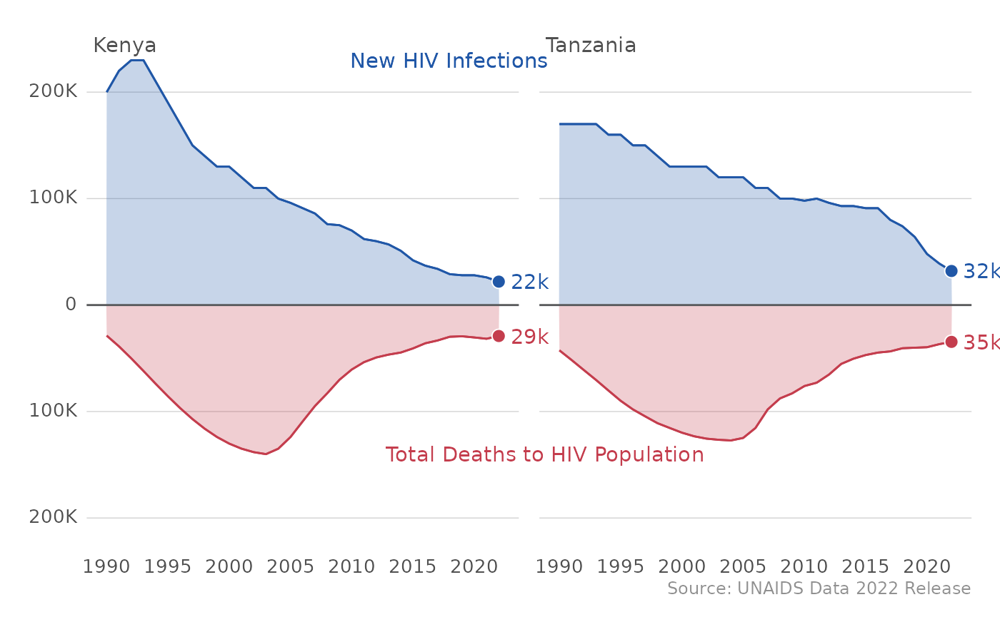
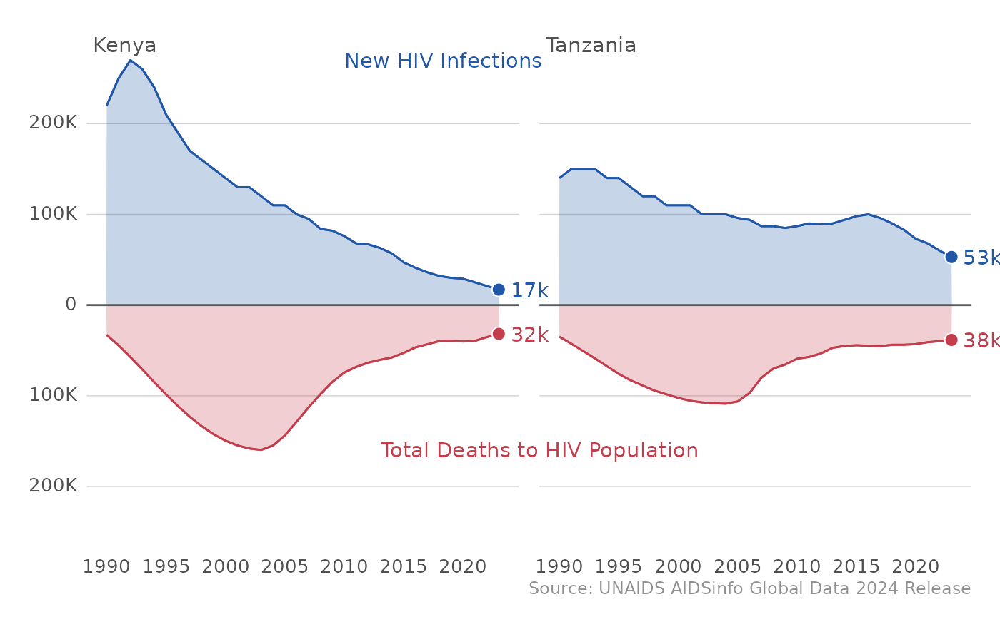
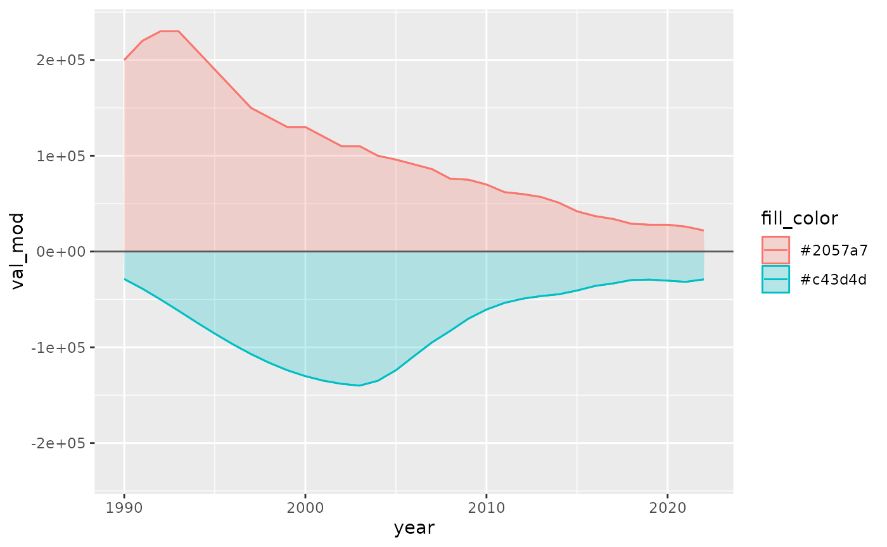
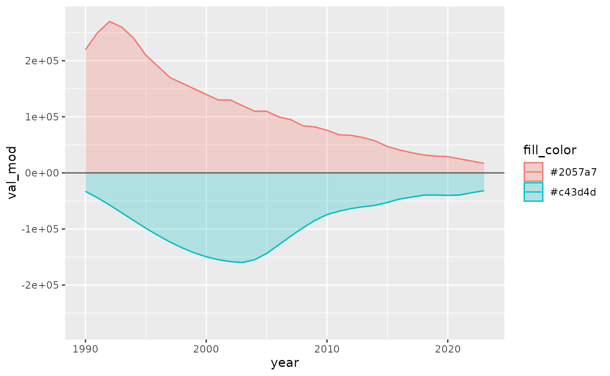
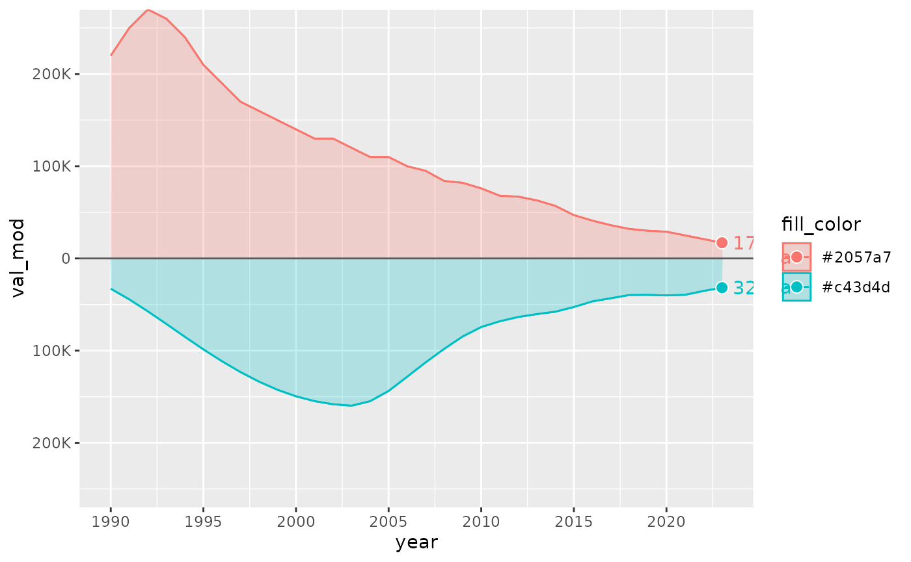
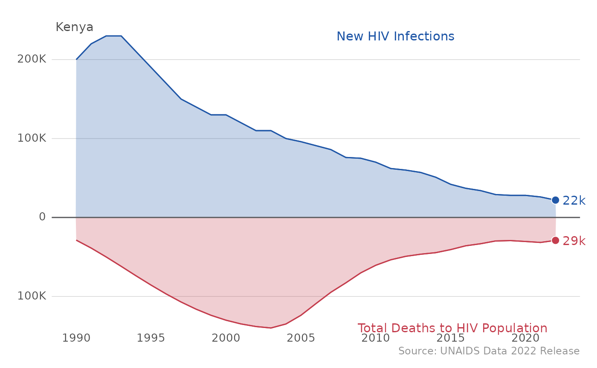

Introduction
PEPFAR defines HIV epidemic control as the “point at which the total number of new HIV infections falls below the total number of deaths from all causes among HIV-infected individuals, with both declining.” The integer indicators in the HIV Estimates data can be used to analyze and plot these trends.
To assess progress towards this definition of epidemic control, we
can use the "HIV Estimates" tab of the UNAIDS data. This
vignette will walk through how to use the epi_plot function
in the MindTheGap package to generate plots.
Epidemic Control Plotting Function
First, let’s take a look at the epi_plot function in
action: to use this function, first load the mindthegap
package and specify your PEPFAR country of interest in the
sel_cntry parameter of the epi_plot
function.
#Load library
library(mindthegap)
epi_plot(sel_cntry = "Kenya")
In case you want to compare epidemic control across countries, the
epi_plot function allows for you to list several countries
of interest in the sel_cntry parameter as well.
library(mindthegap)
epi_plot(sel_cntry = c("Kenya","Tanzania"))
In addition to looking at epidemic control at the country level, we
can also see trends across all of PEPFAR by just using the
epi_plot() function, as “ALL PEPFAR” is the default country
in the sel_cntry parameter.

This function makes it really easy to generate plots on your own for countries of interest. Let’s peek under the hood and see how the function works to munge the data and create the plots.
Reshaping epidemic control data
First, let’s load all the other libraries that we need to generate
these plots and load the HIV Estimates data.
library(glitr)
library(extrafont)
library(scales)
library(ggtext)
library(magrittr)
library(ggplot2)
df_epi <- mindthegap::pull_unaids(data_type = "HIV Estimates", pepfar_only = TRUE)
- To create the epidemic control curves, you will need 2 indicators
from the
HIV Estimatestab:Number New HIV InfectionsTotal deaths to HIV Population
Let’s first filter the 2 datasets down to the indicators that we need, and filter for all sexes and all ages.
#Filter down to the estimate and all ages, and the indicators you need
#Pull indicators
df_epi_pepfar <- df_epi %>%
dplyr::filter(age == "All", sex == "All",
indicator %in% c("Total deaths to HIV Population", "Number New HIV Infections")) %>% #grab indicators
dplyr::select(year, country,indicator, estimate) %>%
dplyr::arrange(country, indicator, year) #order rows by these variables
df_epi_pepfar
#> # A tibble: 3,498 × 4
#> year country indicator estimate
#> <dbl> <chr> <chr> <dbl>
#> 1 1990 Angola Number New HIV Infections 6800
#> 2 1991 Angola Number New HIV Infections 8000
#> 3 1992 Angola Number New HIV Infections 9200
#> 4 1993 Angola Number New HIV Infections 10000
#> 5 1994 Angola Number New HIV Infections 12000
#> 6 1995 Angola Number New HIV Infections 14000
#> 7 1996 Angola Number New HIV Infections 15000
#> 8 1997 Angola Number New HIV Infections 17000
#> 9 1998 Angola Number New HIV Infections 18000
#> 10 1999 Angola Number New HIV Infections 20000
#> # ℹ 3,488 more rows- Let’s now merge the datasets and perform some munging to easily
identify some metrics that we care about for the PEPFAR definition of
epidemic control.
-
Declining deaths: use
dplyr::lag()function to create avalue = TRUEif deaths are declining -
Infections below deaths:
TRUEwherever infections < deaths - Ratio of infections / deaths
-
Epi_control:
TRUEif declining deaths and infections below deaths are both true
-
Declining deaths: use
#Create the merged data frame
#Perform necessary munging
df_epi_pepfar <- df_epi_pepfar %>%
tidyr::pivot_wider(names_from = "indicator",
values_from = "estimate", #pivots data wide into infections column
names_glue = "{indicator %>% stringr::str_extract_all('deaths|Infections') %>% tolower}")
#Add in ALL PEPFAR data
df_epi_pepfar <-
df_epi_pepfar %>%
dplyr::bind_rows(df_epi_pepfar %>%
dplyr::mutate(country = "All PEPFAR") %>%
dplyr::group_by(country, year) %>%
dplyr::summarise(across(where(is.numeric), \(x) sum(x,na.rm = TRUE)), .groups = "drop")) #sums PEPFAR country estimates
#Create epi control flag
df_epi_pepfar <-
df_epi_pepfar %>%
dplyr::mutate(declining_deaths = deaths - dplyr::lag(deaths, order_by = year) <= 0, by = c(country)) %>% #TRUE/FALSE declining
dplyr::mutate(infections_below_deaths = infections < deaths,
ratio = infections / deaths,
direction_streak = sequence(rle(declining_deaths)$lengths),
epi_control = declining_deaths == TRUE & infections_below_deaths == TRUE) #epi control definition
df_epi_pepfar
#> # A tibble: 1,848 × 10
#> year country infections deaths declining_deaths by infections_below_dea…¹
#> <dbl> <chr> <dbl> <dbl> <lgl> <chr> <lgl>
#> 1 1990 Angola 6800 2025 NA Ango… FALSE
#> 2 1991 Angola 8000 2435 TRUE Ango… FALSE
#> 3 1992 Angola 9200 2989 TRUE Ango… FALSE
#> 4 1993 Angola 10000 3605 TRUE Ango… FALSE
#> 5 1994 Angola 12000 4218 TRUE Ango… FALSE
#> 6 1995 Angola 14000 4825 TRUE Ango… FALSE
#> 7 1996 Angola 15000 5628 TRUE Ango… FALSE
#> 8 1997 Angola 17000 6505 TRUE Ango… FALSE
#> 9 1998 Angola 18000 7557 TRUE Ango… FALSE
#> 10 1999 Angola 20000 8619 TRUE Ango… FALSE
#> # ℹ 1,838 more rows
#> # ℹ abbreviated name: ¹infections_below_deaths
#> # ℹ 3 more variables: ratio <dbl>, direction_streak <int>, epi_control <lgl>Now that we have a workable data frame, we can start to add color and
style elements. Using ifelse() statements, we can create
the fill_color variable to indicate the colors of each
indicator (drawing color inspiration from OHA’s Data Visualization
Style Guide). We can also create the val_mod variable
to add negative values for total deaths in order to create the
dual-axis.
#Add colors to indicators and flip axis
df_epi_pepfar <- df_epi_pepfar %>%
tidyr::pivot_longer(c(infections, deaths), names_to = "indicator") %>% #put back indicators in column
dplyr::arrange(country, indicator, year) %>%
dplyr::mutate(val_mod = ifelse(indicator == "deaths", -value, value), #create dual-axis
fill_color = ifelse(indicator == "deaths", glitr::old_rose, glitr::denim)) #add colors to indicate flip axis
df_epi_pepfar
#> # A tibble: 3,696 × 12
#> year country declining_deaths by infections_below_deaths ratio
#> <dbl> <chr> <lgl> <chr> <lgl> <dbl>
#> 1 1990 All PEPFAR FALSE All PEPFAR FALSE 5.05
#> 2 1991 All PEPFAR FALSE All PEPFAR FALSE 4.39
#> 3 1992 All PEPFAR FALSE All PEPFAR FALSE 3.79
#> 4 1993 All PEPFAR FALSE All PEPFAR FALSE 3.25
#> 5 1994 All PEPFAR FALSE All PEPFAR FALSE 2.73
#> 6 1995 All PEPFAR FALSE All PEPFAR FALSE 2.46
#> 7 1996 All PEPFAR FALSE All PEPFAR FALSE 2.17
#> 8 1997 All PEPFAR FALSE All PEPFAR FALSE 1.94
#> 9 1998 All PEPFAR FALSE All PEPFAR FALSE 1.75
#> 10 1999 All PEPFAR FALSE All PEPFAR FALSE 1.59
#> # ℹ 3,686 more rows
#> # ℹ 6 more variables: direction_streak <int>, epi_control <lgl>,
#> # indicator <chr>, value <dbl>, val_mod <dbl>, fill_color <chr>Let’s filter our country down to Kenya now for a country-level epidemic control curve.
- We are also going to specify a couple more style elements to call on
when we create our plot:
-
val_lab: adding a value label for the most recent year of data. We can use thescales::number()function to standardize the number format. -
max_plot_pt&min_plot_pt: define a max and min for the dual-axis -
lab_pt: add a point at the most recent year’s value -
new_hiv_label&tot_death_label: create labels for the indicators and place them at the max/min y-axis point
-
#COUNTRY
df_viz_cntry <- df_epi_pepfar %>%
dplyr::filter(country %in% "Kenya") %>%
dplyr::mutate(val_lab = dplyr::case_when(year == max(year) ~
scales::number(value, 1, scale = 1e-3, suffix = "k")), #standardize number format
max_plot_pt = max(value),
min_plot_pt = min(val_mod),
lab_pt = dplyr::case_when(year == max(year) ~ val_mod),
indicator = ifelse(indicator == "deaths", "Total Deaths to HIV Population", "New HIV Infections"), #creating labels
new_hiv_label = dplyr::case_when(value == max_plot_pt ~ indicator), #assigning label location to min/max
tot_death_label = dplyr::case_when(val_mod == min_plot_pt ~ indicator)) %>%
dplyr::mutate(cntry_order = max(value, na.rm = T), .by = country) %>%
dplyr::mutate(country = forcats::fct_reorder(country, cntry_order, .desc = T))
Plotting the epidemic control curves
- Our data frame is ready to go! Let’s get started with the viz. We’ll
start by getting our framework down:
-
ggplot(): to define our aesthetics (x =year, y =val_mod, group by the indicator, and add fill and color asfill_color) -
geom_blank(): defines a max point on the y-axis -
geom_area(): creates the area graph -
geom_line(): creates the line border on the area graph -
geom_hline(): adds a horizontal line at the x-axis
-
df_viz_cntry %>%
ggplot(aes(year, val_mod, group = indicator, fill = fill_color, color = fill_color)) +
geom_blank(aes(y = max_plot_pt)) + #sets max y-axis above
geom_blank(aes(y = -max_plot_pt)) + #sets max y-axis below
geom_area(alpha = .25) +
geom_hline(yintercept = 0, color = glitr::grey80k) +
geom_line() 
- This is a good start. Let’s continue to add style elements, adjust
the scales, and add annotations
-
geom_point(): adds a point atlab_ptthat we specified earlier -
geom_text(): adds the annotationval_labthat we specified earlier -
scale_y_continuous(): cleans up the y-axis withscales::label_number()andexpand -
scale_x_continuous(): takes the max and min year and breaks the x-axis year markings into 5 year increments.
-
df_viz_cntry %>%
ggplot(aes(year, val_mod, group = indicator, fill = fill_color, color = fill_color)) +
geom_blank(aes(y = max_plot_pt)) + #sets max y-axis above
geom_blank(aes(y = -max_plot_pt)) + #sets max y-axis below
geom_area(alpha = .25) +
geom_hline(yintercept = 0, color = glitr::grey80k) +
geom_line()+
geom_point(aes(y = lab_pt), na.rm = TRUE, shape = 21, color = "white", size = 3) +
geom_text(aes(label = val_lab), na.rm = TRUE,
hjust = -0.3,
family = "Source Sans Pro Light") + #value label text
scale_y_continuous(labels = ~ (scales::label_number(scale_cut = scales::cut_short_scale())(abs(.))),
expand = c(0, 0)) +
scale_x_continuous(breaks = seq(min(df_epi_pepfar$year), max(df_epi_pepfar$year),5))#automatic x-axis min/max
We’re almost there! Let’s tackle the issue of color - even though we
specified the color of the indicators in our aesthetics earlier, it
still doesn’t seem to be registering our fill_color. To
solve this issue, we have to use the function
scale_fill_identity() to tell ggplot to use our
pre-specified fill_color column as the color identity.
df_viz_cntry %>%
ggplot(aes(year, val_mod, group = indicator, fill = fill_color, color = fill_color)) +
geom_area(alpha = .25) +
geom_hline(yintercept = 0, color = glitr::grey80k) +
geom_line() +
geom_point(aes(y = lab_pt), na.rm = TRUE,
shape = 21, color = "white", size = 3) +
geom_text(aes(label = val_lab), na.rm = TRUE,
hjust = -0.3,
family = "Source Sans Pro Light") +
scale_y_continuous(labels = ~ (scales::label_number(scale_cut = scales::cut_short_scale())(abs(.))),
expand = c(0, 0)) +
scale_x_continuous(breaks = seq(min(df_epi_pepfar$year), max(df_epi_pepfar$year),5))+
scale_fill_identity(aesthetics = c("fill", "color"))
- Much better - we’re almost there! Let’s finish off our plot with
some themes and styles.
-
geom_text: adds the annotation for thenew_hiv_labelandtot_death_labelwe created earlier -
labs(): By specifying x and y asNULL, we are removing the labels on the axis. Here is where you can add additional annotations such as titles, subtitles, captions, etc. -
coord_cartesian(): changing cartesian plot and clipping preferences -
glitr::si_style_ygrid(): uses standard SI style format from theglitrpackage andfacet_spaceadjusts the spacing of the y-axis grid -
theme(): allows you to customize components of the plot withaxis.text.yfocusing on the y-axis text
-
df_viz_cntry %>%
ggplot(aes(year, val_mod, group = indicator, fill = fill_color, color = fill_color)) +
geom_area(alpha = .25) +
geom_hline(yintercept = 0, color = glitr::grey80k) +
geom_line() +
geom_point(aes(y = lab_pt), na.rm = TRUE,
shape = 21, color = "white", size = 3) +
geom_text(aes(label = val_lab), na.rm = TRUE,
hjust = -0.3,
family = "Source Sans Pro Light") +
scale_y_continuous(labels = ~ (scales::label_number(scale_cut = scales::cut_short_scale())(abs(.))),
expand = c(0, 0)) +
scale_x_continuous(breaks = seq(min(df_epi_pepfar$year), max(df_epi_pepfar$year),5))+
scale_fill_identity(aesthetics = c("fill", "color")) +
ggplot2::facet_wrap(~country) + #small multiples of countries
geom_text(aes(label = new_hiv_label, x = 2005, y = (max_plot_pt)), na.rm = TRUE,
hjust = -0.3, family = "Source Sans Pro Light") +
geom_text(aes(label = tot_death_label, x = 2005, y = (min_plot_pt)), na.rm = TRUE,
hjust = -0.3, family = "Source Sans Pro Light") +
labs(x = NULL, y = NULL) + coord_cartesian(expand = T, clip = "off") +
glitr::si_style_ygrid(facet_space = 0.75) + #adjusted y-axis grid spacing
theme(axis.text.y = ggtext::element_markdown()) +
labs(caption = "Source: UNAIDS Data 2022 Release")